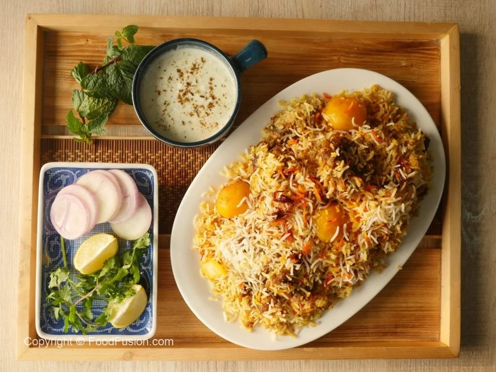
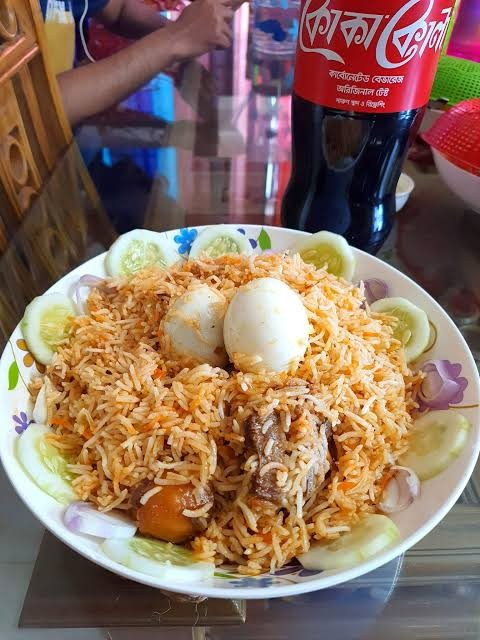

Rice and fish are the heart of a Bengali meal. Hilsa fish, curries and lentils (dal) are served almost everywhere.
On special days you will find Kacchi Biryani in Dhaka, and home-style biryani is often served with boiled egg and cucumber slices.

